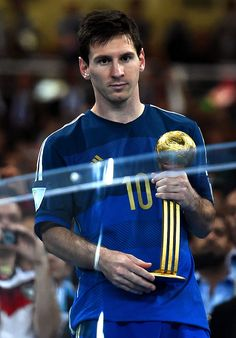

|  | Goal | 4 |
| Assistant | 1 | |
| MOT | 4 | |
| Record | 2nd |
At the 2014 FIFA World Cup, Lionel Messi scored four goals and provided one assist for Argentina in the group stage. His goals came against Bosnia and Herzegovina, Iran and Nigeria. Argentina reached the final round of the competition from the group stage, losing 1–0 to Germany in the final. Messi won the Man of the Match award in three of his group matches and one in the final match. You can watch his performance in the video below.